Electric vehicle
Demonstration of the Electric Vehicle example model, featuring an electric vehicle with a fast DC charger. Both the EV and the charger are represented with detailed power electronics models.
Introduction
This model consists of an electric vehicle (EV) with a 270 kW induction motor and a 250 Ah Li-ion battery. The 175 kVA battery charger is implemented using the Battery Inverter component from the Microgrid Library, which supports grid forming and following modes for vehicle-to-grid, grid-to-vehicle, and Uninterruptible Power Supply (UPS) operation. The powertrain control module (PCM) is based on a Field-Oriented Control (FOC) scheme with regenerative braking capability. The model includes a 20 kVA load for simulating UPS mode. This is done by switching the battery inverter to grid-forming mode and disconnecting the grid.
This application example model does not implement any specific manufacturer’s topology for the drivetrain or for the battery converter. Rather, it demonstrates the use of ready-to-use power electronics and microgrid components in order to build a high-fidelity, system-level application. This example requires a license with access to the Microgrid toolbox for real-time simulation.
Model description
The model comprises of three main subsystems:
- Grid and Residential Load
- Charging Station
- Electric Vehicle
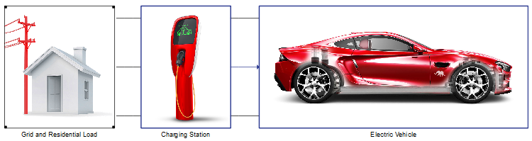
The three-phase grid consists of a 240 V / 60 Hz voltage source and an RL-section impedance. The grid is connected to the rest of the circuit by the contactor S1, as can be seen in Figure 2. Next to the contactor is a 20 kVA load, which represents a household load that can draw power either from the grid or from the vehicle battery.
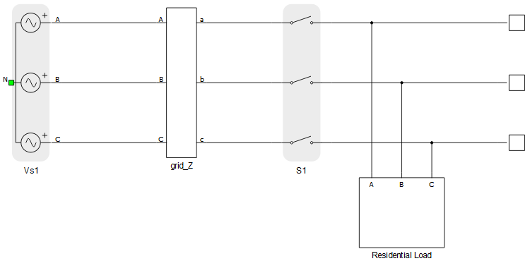
- Lithium-ion Battery
- Three-Phase Inverter with LC filter
- Induction motor
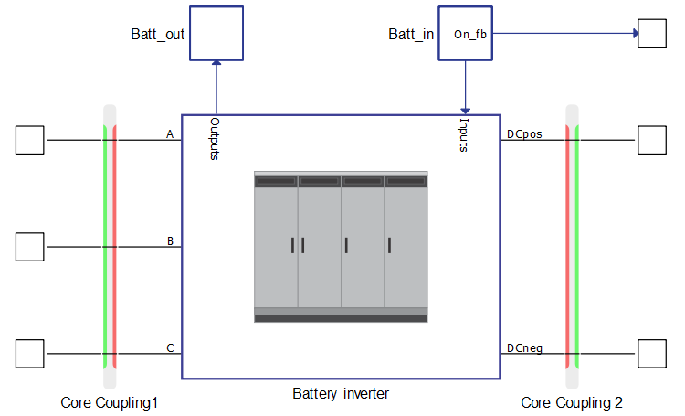
The battery inverter (Figure 3, right from the core coupling) is a component from the Microgrid Library, and it is implemented as a full switching model with its own control in both grid following and grid forming mode. In order to scale-down the inverter to 175 kVA, the component model is kept intact and only the mask-level parameters are changed (Table 1).
| Parameter | New values | Default values |
| Nominal power | 175 kVA | 1.6 MVA |
| Nominal voltage | 240 V | 480 V |
| Nominal DC link voltage | 400 V | 10 kV |
The EV presented in this model is realised using a battery with the following parameters:
| Type | Lithium-Ion |
| Nominal voltage | 400 V |
| Capacity | 250 Ah |
The Electric Vehicle subsystem consists of the EV model, Connection logic, Control elements, Measurement device, a Consumption calculator, and Mechanical model blocks. The electric vehicle model is shown in Figure 4. The internal modulator of the Three-phase Inverter component is used, and the carrier frequency is set to 20 kHz.
A full description of how the subsystems are mathematically modeled continues below, followed by a description of how the electric vehicle performs under Simulation.
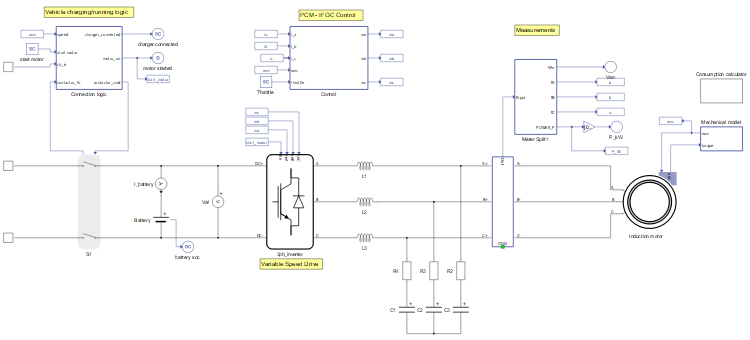
Logic is implemented in the Connection (Vehicle charging/running) block for connecting the vehicle and disconnection from the charging station. The block has the following functions:
- Connect the vehicle to the charging station in case the vehicle has stopped.
- Preventing the vehicle from disconnecting from the charging station while the charger is connected.
- Prevent connection to the charging station while the vehicle is running.
- Prevent the motor from starting while charger is connected.
The PWM reference signals ma, mb, and mc are generated by the PCM, which can be seen in Figure 5. A Three-Phase Meter component is used to measure the currents and active power flow between the induction motor and the inverter. The PCM employs a simple FOC based scheme, in which the measured three-phase currents are transformed into direct (i_d) and quadrature (i_q) components, which are then controlled with PI regulators. The machine flux is related to i_d while the torque is related to i_q. The rotor flux angle ϴ_e, needed for the abc-to-dq and dq-to-αβ transforms, is calculated (Indirect FOC) from the machine electrical parameters, rotor speed, and measured currents.
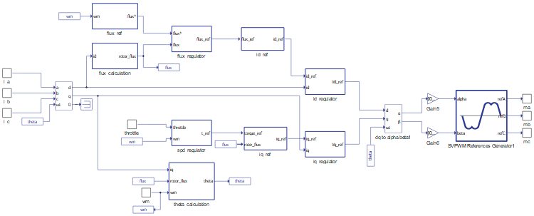
The motor drive is realized using an induction machine with parameters shown in Table 3.
| Type | Induction with squirrel cage |
| Nominal voltage | 400 V |
| Maximum power | 270 kW |
| Maximum frequency | 565 Hz |
| Maximum RPM | 16950 |
| Number of pole pairs | 2 |
The flux reference is generated in the flux_ref block and starts as a constant value . As the motor speeds up, however, the armature voltage rises to maintain the flux. When the inverter voltage limit is reached, the rotor speed cannot increase further; this defines the base speed . Then, the Flux Weakening Method is employed to allow the rotor to go beyond the base speed; at this point the maximum flux reference is multiplied by the inverse of the measured rotor speed.
The torque reference is calculated in the spd_regulator subsystem (Figure 6) from the Throttle input in the SCADA panel. The Throttle is a value ranging from 0 to 100, and this value is first used for speed regulation as a percentage of the maximum speed (250 km/h).
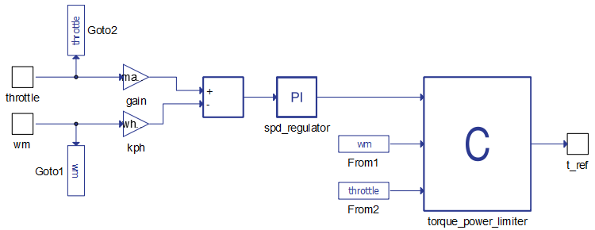
The output of the speed regulator is a reference torque, which is further processed by a C block that:
- Limits the acceleration power to 270 kW
- Limits the acceleration torque to 860 Nm
- Limits the regenerative braking power to 60 kW
- Limits the regenerative braking torque to 250 Nm
- Multiplies the resulting torque by the throttle percentage
The induction motor is loaded with variable torque. The mechanical part of the electric motor is governed by Newton's Law for Rotation:
where is the speed of the vehicle, is the mass of the vehicle, is the effective mechanical tractive force of the vehicle, is the braking force, and is the sum of the load forces applied to the vehicle.
The effective mechanical tractive force is represented by following formula:
where is the efficiency of transmission, the electric torque produced my motor, and the gear ratio, and the diameter of the wheels.
The braking force is calculated by the following formulae:
where is the percentage (0-100) of the maximum braking force that can be applied.
where is a component of the gravitational force projected to the surface, the rolling resistance force and is the wind resistance force.
where is the weight of the vehicle and α is the slope angle.
where is the vehicle speed in and is the rolling resistance.
where is the drag area and is the air density.
where is the drag coefficient and is the frontal area of the vehicle.
This model runs on 3 cores, and therefore includes core/device coupling elements. In order to avoid topological conflicts snubbers are added to the coupling elements:
- Core Coupling1 (inside Charging Station) – the red (current) side of the coupling is facing the contactor, so a fixed R-C snubber should be added with the following parameters:
- Core Coupling2 (inside Charging Station) – In order to discharge the capacitor inside the Battery inverter, a fixed resistive snubber is added on the red (current) side. Also, the green (voltage) side of the coupling faces the Three Phase inverter, so the dynamic resistive snubber is added.
More information about the use of snubbers and their parametrization can be found here.
Simulation
This application comes with a pre-built SCADA panel (Figure 7). The panel offers most essential user interface elements (widgets) to monitor and interact with the simulation in runtime. You can customize it freely to fit your needs.
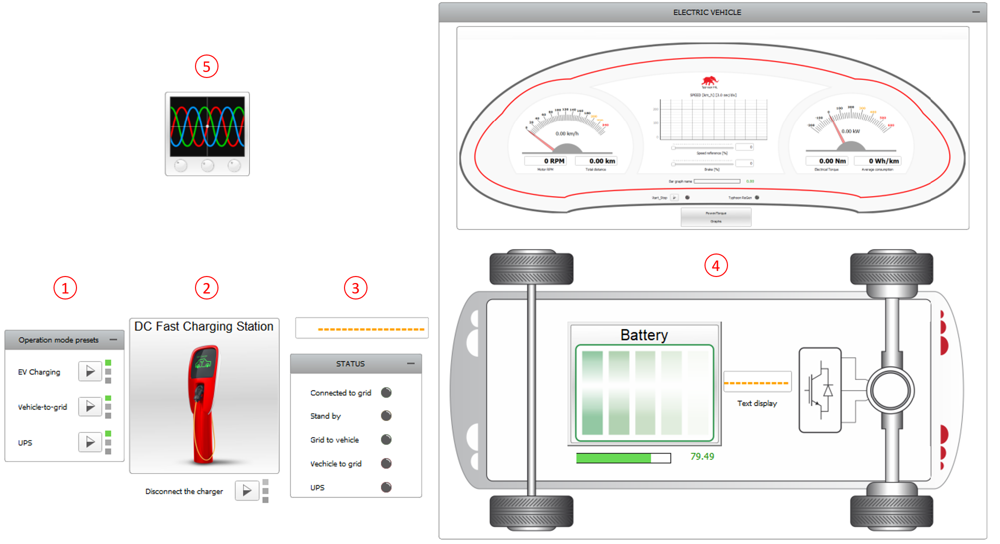
The SCADA Panel consists of the following parts, as shown in Figure 7:
- Inverter Mode Presets Group
- DC Fast Charging Station subpanel
- Status LED Group
- Car Dashboard subpanel
- Capture/Scope
The Inverter Mode Presets group contains macro buttons that automatically set the parameters summarized in Table 4 as long as the EV is connected to the charging station. Activating the EV Charging button assigns a negative value to the grid power P_ref, which charges the EV. Setting the Inverter Mode to Vehicle-to-grid changes the status of the S1 contactor inside the Charging Station to open and sets the P_ref to positive, meaning the local grid load receives power from both the battery and the grid. Finally, UPS mode changes the charging station to Grid Forming mode and sets the grid connection and power demand to zero. This corresponds to residential blackout situations, where EVs can act as a backup power supply (V2G).
| P_ref | Grid connection | Operation Mode | |
|---|---|---|---|
| EV Charging | -150 kW | On | Grid following |
| Vehicle-to-grid | 150 kW | On | Grid following |
| UPS | 0 kW | Off | Grid forming |
The DC Fast Charging Station subpanel controls all functions of the EV Battery Inverter (status, mode, voltage, frequency, and P-Q references) while it is connected to the grid. The EV can be connected to the charging station only when the motor speed is zero and stopped from the Car Dashboard Start/Stop button. Once connected, the motor cannot be started until the DC charger is disconnected by the Disconnect the charger button.
The DC Fast Charging Station subpanel also includes graphs for monitoring the voltage and frequency of the grid, power exchange, and synchronization status, as shown in Figure 8.
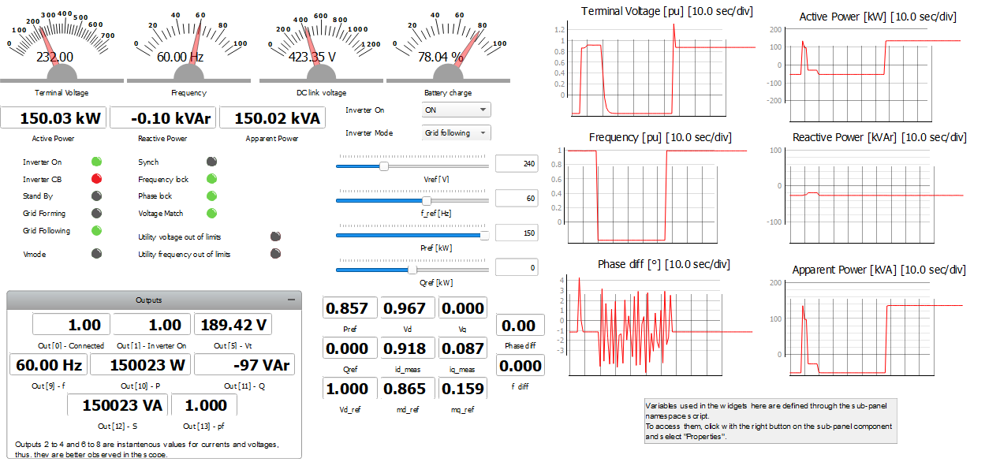
The Status LED group contains 5 LEDs that indicate if the EV is connected to the grid, as well as the inverter operation mode based on the power flow direction (standby mode if there is no power exchange).
The Car Dashboard allows for starting and stopping the motor, adjusting the throttle, and activating the brake with the help of sliders. EV dynamics can be monitored using:
- Two gauges for speed and active power
- A trace graph for speed history
- A bar graph for SOC
- Four digital displays for motor rotational speed, total distance, electrical torque, and average energy consumption.
- Two LEDs for motor status and regenerative braking (Typhoon ReGen) status
- The Power/Torque Graphs subpanel
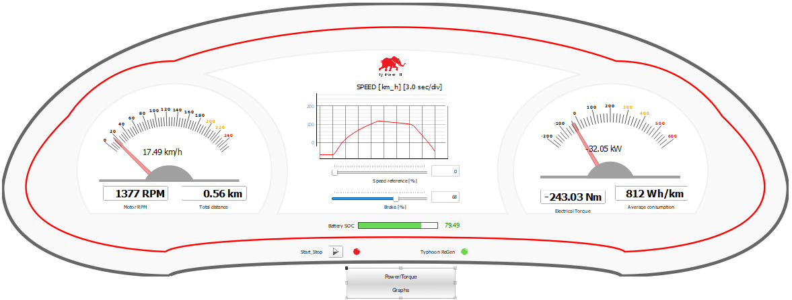
The Capture/Scope widget can be used to observe waveforms of the circuit quantities.
Together, these tools can be used to demonstrate a possible driving cycle for the EV. To do this, the Electrical Vehicle Example Schematic (.tse) file must first be opened, compiled, loaded in HIL SCADA using the pre-existing SCADA panel (.cus), and run. Next, the Throttle slider in the Car Dashboard subpanel should be set to 100%, and the Start/stop button for the motor should be pressed. After returning to root, entering the Capture/Scope widget, and triggering a capture, the machine armature currents and voltages during motor acceleration are shown (Figure 10).
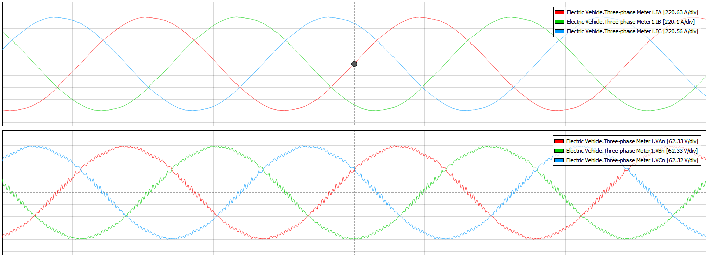
You can see the Torque x Speed and Power x Speed graphs by clicking on the Power/Torque Graphs button in the Car Dashboard subpanel. The responses during acceleration are reproduced in Figure 11. With the Throttle slider set to 100%, the maximum torque (860 Nm) is applied up to approximately 40 km/h, which is the speed calculated for the maximum torque and maximum power (270 kW). Above this speed, the torque reference is gradually reduced to maintain a constant power region. After the breakdown point, at 250 km/h, the maximum power cannot be maintained anymore (constant slip region). Notice that the XY Graph widget used to plot the curves in Figure 11 has an update rate of at least 250 ms. Therefore, you may obtain curves slightly different than the ones shown here. Graphs with better resolution can be obtained using the test automation script, as shown in Figure 14.
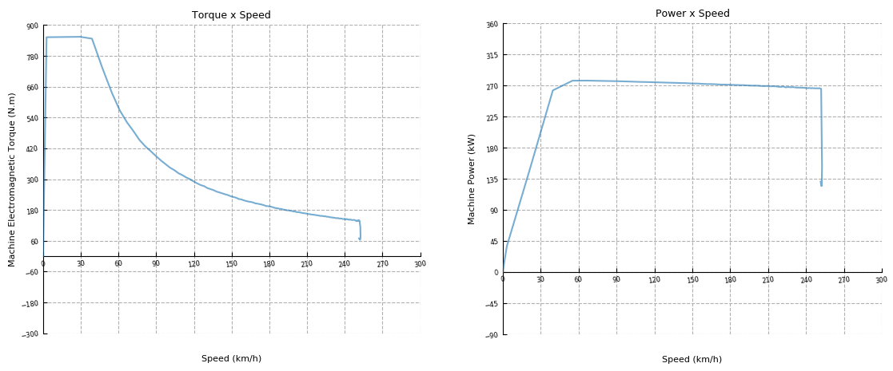
After the vehicle reaches the maximum speed of 250 km/h, set the Throttle slider to zero (Figure 12). This applies a negative torque reference, which slows down the vehicle, while recharging the battery with the maximum regenerative power of 60 kW. As speed decreases, the torque magnitude increases while keeping the power constant. At 30 km/h, the 250 Nm torque limit is reached, reducing the regenerative power shortly before the car comes to a stop.
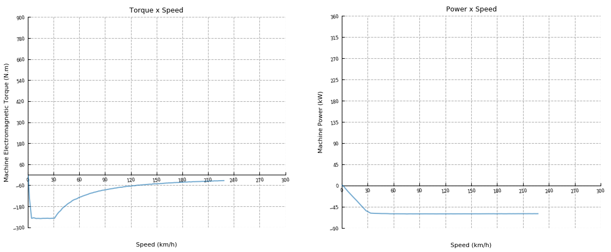
Test automation
The provided test script evaluates the electric vehicle responses under acceleration with different throttle values (30%, 50%, 80%, and 100%). For each throttle input, the speed, torque, and power signals are captured and the following assertions are tested:
- EV reaches 100 km/h;
- time from 0 to 100 km/h respects the limit of 8 seconds;
- final speed respects the limit of 230 km/h;
- torque is constant until the base speed;
- power is constant from the base speed until reaching the final speed.
Figure 13 demonstrates part of the generated test report, highlighting the speed response for acceleration at 80% throttle. This is the only test condition that passes all tests. At 30% throttle, the EV does not reach 100 km/h. At 50% throttle, the vehicle does reach 100 km/h, but the time from 0 to 100 km/h is over 8 seconds. At 100% throttle, the EV reaches 100 km/h in the required time, however the final speed is above 230 km/h. All tests comply with the constant torque and constant power assertions.
Graphs comparing Torque x Speed and Power x Speed responses for all throttle values tested are also shown in the report, as reproduced in Figure 14.
You can obtain a full test report by running the test from TyphoonTest IDE (for easy access, press the "Open Test" button in the Example Explorer).
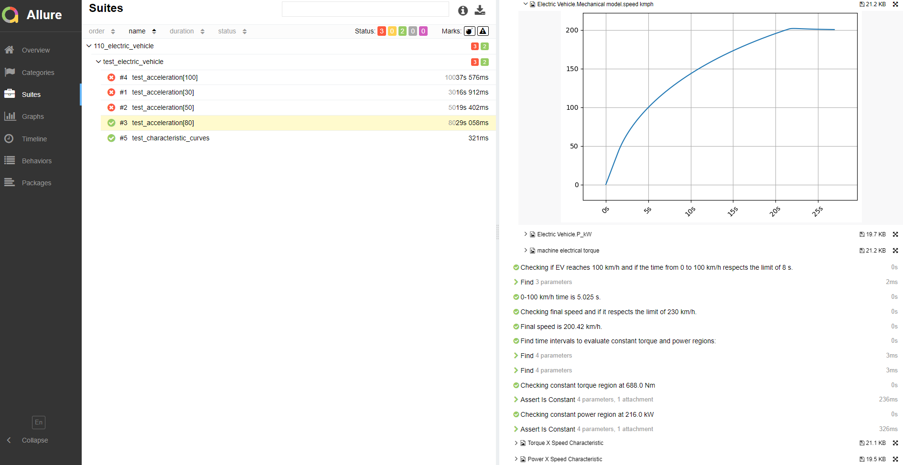
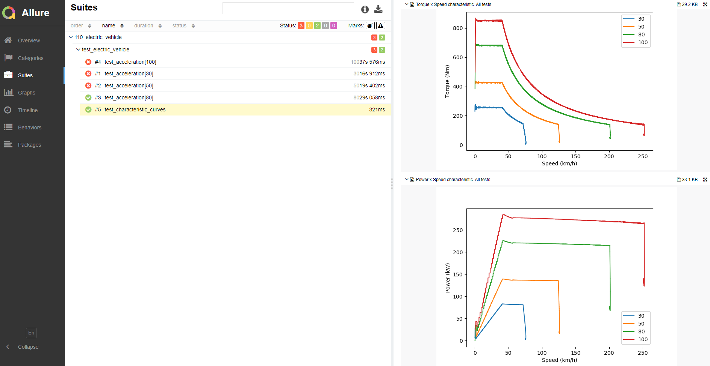
Example requirements
Table 5 provides detailed information about the file locations and hardware requirements for running the model in real-time, followed by the HIL device resource utilization when running the model using this minimal hardware configuration. This information is provided to help you with running and customizing the model as you see fit.
| Files | |
|---|---|
| Typhoon HIL files |
examples\models\automotive\electric vehicle electric vehicle.tse electric vehicle.cus examples\tests\110_electric_vehicle\ test_electric_vehicle.py |
| Minimum hardware requirements | |
| No. of HIL devices | 1 |
| HIL device model | HIL506 |
| Device configuration | 1 |
| HIL device resource utilization | |
| No. of processing cores | 3 |
| Max. matrix memory utilization | 0.49% (core2) 57.1% (core1) 72.17% (core0) |
| Max. time slot utilization | 12.5% (core2) 31.79% (core1) 41.79% (core0) |
| Simulation step, electrical | 1 µs |
| Execution rate, signal processing | 100 µs |
Authors
- Dusan Kostic
- Marcos Moccelini
- Sergio Costa
- Caio R. D. Osorio